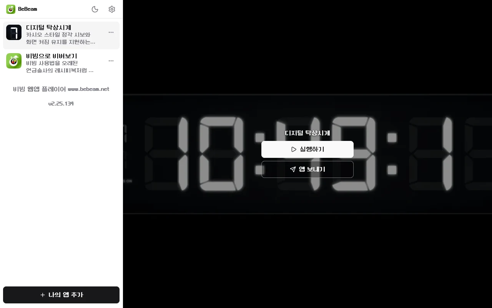
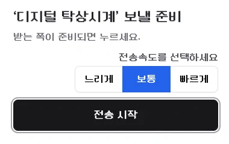
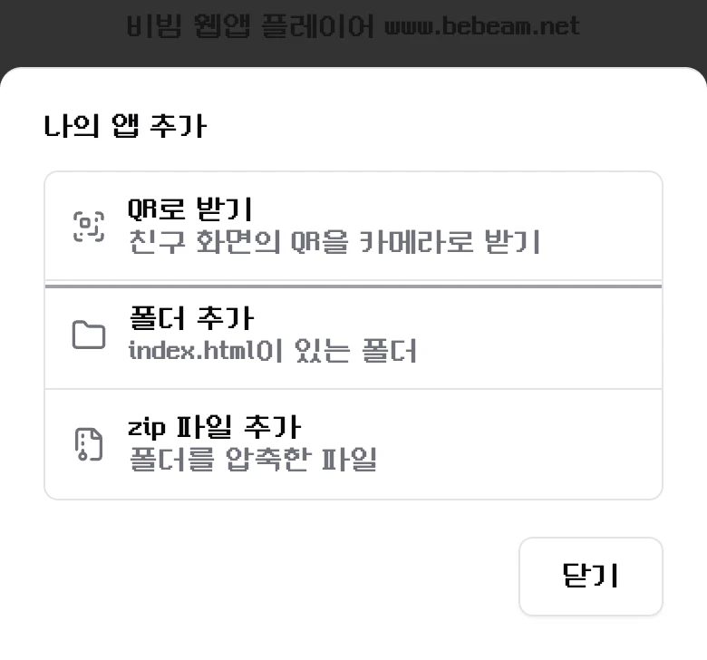
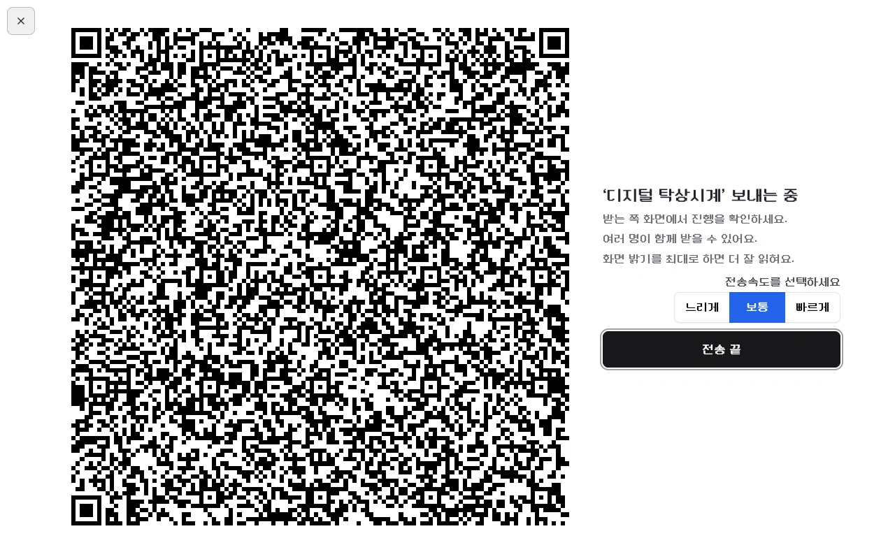
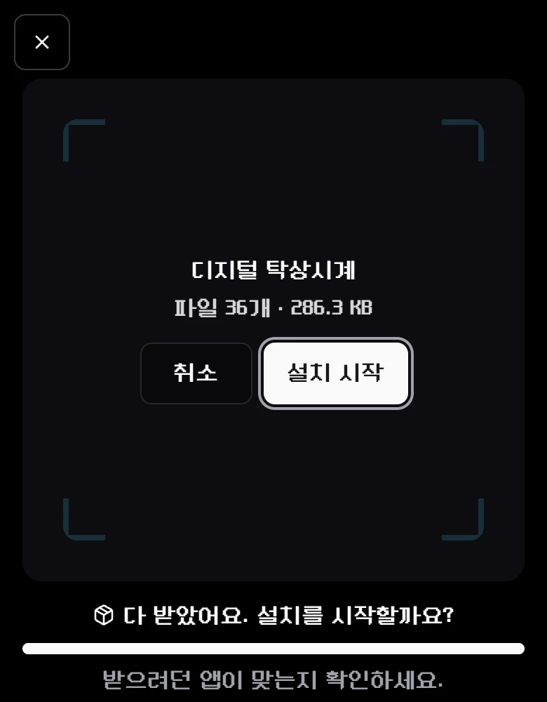

PART 1
처음이라면 차례대로 따라 하세요
샘플 앱 하나를 PC에 넣고 스마트폰까지 옮겨 봐요.
해 본 적 있다면 필요한 단계만 골라 보세요.
1 웹앱 샘플 내려받기
목표 연습할 앱 파일(.zip) 하나를 PC에 받아요
마음에 드는 앱의 내려받기를 누르세요.
지금은 샘플을 불러오지 못했어요. 잠시 뒤에 다시 와 주세요.
2 받은 zip 파일 찾기
목표 받은 파일이 어디 있는지 알아 두어요
- 🗜️ digitalclock.zip
- 📄 보고서.pdf
- 🖼️ 사진.png
브라우저 오른쪽 위의 ⬇ 표시를 누르면 방금 받은 파일이 보여요. 파일은 보통 다운로드 폴더에 있어요.
압축은 풀지 말고 그대로 두세요. 비빔은 zip을 바로 넣을 수 있어요.
3 앱 넣는 버튼 알아 두기
목표 앱을 넣는 버튼이 어디 있는지 미리 봐 두어요

여기!비빔을 열면 왼쪽 아래에 ＋ 나의 앱 추가가 있어요. 2단계의 zip 파일을 이 버튼으로 넣어요.
폰에서는 화면 맨 아래에 있어요.
4 내 기기에 설치하기
목표 내 기기에 맞는 설치 방법을 하나 골라요
비빔은 설치해야 쓸 수 있어요. 기기에 따라 방법이 달라요.
여기서는 방법만 보고, 설치는 5단계 버튼으로 시작해요.
A Windows Android
- Chrome이나 Edge로 비빔을 열어요.
- 설치를 눌러요. 주소창 오른쪽의 설치 아이콘을 눌러도 돼요.
B iPhone·iPad·Mac
- Safari로 비빔을 열어요.
- iPhone·iPad는 공유 ⇧ → 홈 화면에 추가
- Mac은 파일 메뉴 → Dock에 추가
5 비빔 설치하고 아이콘으로 열기
목표 바탕화면(홈 화면)의 비빔 아이콘으로 비빔을 열어요
비빔 설치하러 가기- 위 버튼을 눌러 4단계 방법으로 설치해요.
- 설치가 끝나면 바탕화면(홈 화면)의 BeBeam 아이콘으로 열어요. 다음부터도 이 아이콘으로 열어요.
- ＋ 나의 앱 추가 → zip 파일 추가로 2단계의 zip을 넣고 설치를 눌러요.
- 목록에서 앱을 고르고 ▷ 실행하기를 누르면 끝!
6 스마트폰으로 옮기기
목표 PC에 넣은 앱을 인터넷 없이 QR로 스마트폰에 옮겨요
PC와 스마트폰을 나란히 놓고, 번호 순서대로 해요.
-
① 🖥️ PC
바탕화면의 비빔 아이콘으로 비빔을 열어요.
 BeBeam② 📱 스마트폰
BeBeam② 📱 스마트폰폰에서도 비빔을 열어요. 폰에 아직 없으면 4·5단계처럼 먼저 설치해요.
BeBeam -
③ 🖥️ PC
보낼 앱을 고르고 앱 보내기를 눌러요. 폰이 준비되면 전송 시작을 눌러요. QR 그림이 계속 바뀌어요.

폰이 준비되면④ 📱 스마트폰＋ 나의 앱 추가 → QR로 받기를 누르고, 카메라를 PC 화면의 QR에 비춰요.

QR로 받기 -
⑤ 🖥️ PC
폰이 다 받으면 전송 끝을 눌러요.

⑥ 📱 스마트폰설치 시작을 누르면 폰 목록에 앱이 생겨요.

💡 폰에서 폰으로도 똑같이 보낼 수 있어요. 여러 대가 한 QR을 같이 받아도 돼요.
PART 2
AI와 함께 비빔용 앱 만들기
쓰고 있는 AI에게 아래 프롬프트를 먼저 주면, 비빔에서 잘 돌아가는 앱을 만들어 줘요.
A 처음 앱을 만들고 싶나요?
- 아래 프롬프트를 복사해서 AI에게 먼저 보내요.
- AI가 묻는 말에 답하면서 앱을 만들어요.
- 완성한 .zip 파일을 비빔에 넣어요.
- 폰과 친구에게 보내고 같이 비벼요.
B 이미 만든 웹앱이 있나요?
- 아래 프롬프트를 복사해서 앱 폴더와 함께 AI에게 보내요. AI가 비빔에 맞게 필요한 곳만 살짝 고쳐 줘요.
- 완성한 .zip 파일을 비빔에 넣어요.
- 폰과 친구에게 보내고 같이 비벼요.
규칙 주소만 필요하면
자주 묻는 질문
Q 비빔은 어떤 앱인가요?
PC에서 만든 웹앱을 스마트폰에서 실행하는 플레이어예요. 인터넷이 없어도 QR 코드로 다른 기기에 앱을 보낼 수 있어요.
Q QR 전송이 오래 걸려요.
카메라가 오래된 태블릿은 QR을 잘 읽지 못해요. 보내는 쪽에서 전송속도를 느리게로 바꿔 보세요. 화면에 빛이 비쳐 하얗게 번지면 기기 각도를 조금 바꿔 보세요.
Q 꼭 설치해서 써야 하나요?
네. 비빔은 앱을 브라우저 안의 안전한 공간(샌드박스)에 저장해요. 브라우저가 바뀌면 저장 공간도 따로 생겨서 앱이 여기저기 흩어져요. 그래서 한 곳에서만 쓰도록 설치하게 했어요. 바탕화면 아이콘으로 열면 훨씬 편해요.